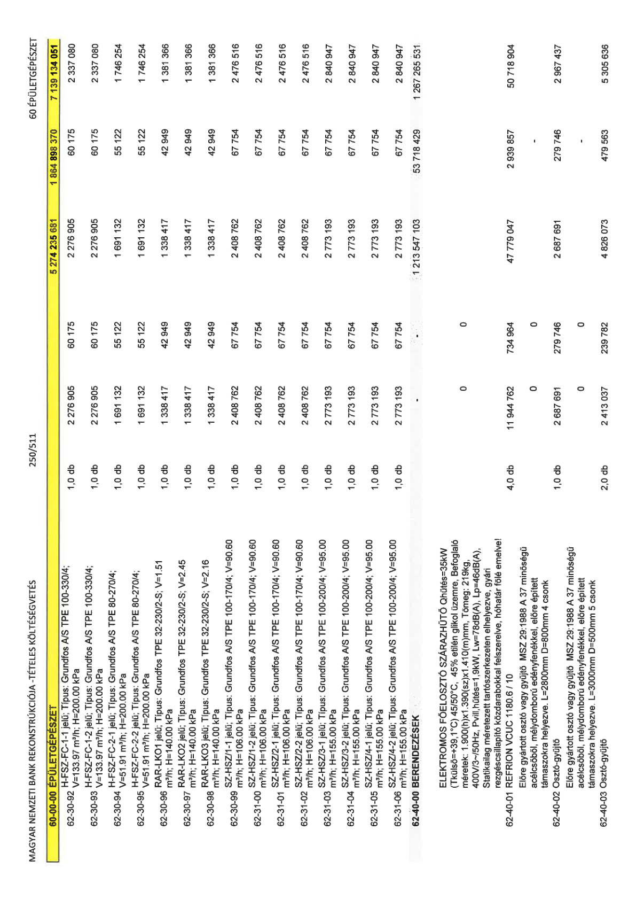

| Tétel | Menny. | Egys. | Anyag e.ár (net HUF) | Díj e.ár (net HUF) | Anyag összesen (net HUF) | Díj összesen (net HUF) | Anyag+Díj összesen (net HUF) |
|---|---|---|---|---|---|---|---|
| 62-30-92 H-FSZ-FC-1-1 jelű; Típus: Grundfos A/S TPE 100-330/4; V=133.97 m3/h; H=200.00 kPa | 1,0 | db | 2 276 905 | 60 175 | 2 276 905 | 60 175 | 2 337 080 |
| 62-30-93 H-FSZ-FC-1-2 jelű; Típus: Grundfos A/S TPE 100-330/4; V=133.97 m3/h; H=200.00 kPa | 1,0 | db | 2 276 905 | 60 175 | 2 276 905 | 60 175 | 2 337 080 |
| 62-30-94 H-FSZ-FC-2-1 jelű; Típus: Grundfos A/S TPE 80-270/4; V=51.91 m3/h; H=200.00 kPa | 1,0 | db | 1 691 132 | 55 122 | 1 691 132 | 55 122 | 1 746 254 |
| 62-30-95 H-FSZ-FC-2-2 jelű; Típus: Grundfos A/S TPE 80-270/4; V=51.91 m3/h; H=200.00 kPa | 1,0 | db | 1 691 132 | 55 122 | 1 691 132 | 55 122 | 1 746 254 |
| 62-30-96 RAR-LKO1 jelű; Típus: Grundfos TPE 32-230/2-S; V=1.51 m3/h; H=140.00 kPa | 1,0 | db | 1 338 417 | 42 949 | 1 338 417 | 42 949 | 1 381 366 |
| 62-30-97 RAR-LKO2 jelű; Típus: Grundfos TPE 32-230/2-S; V=2.45 m3/h; H=140.00 kPa | 1,0 | db | 1 338 417 | 42 949 | 1 338 417 | 42 949 | 1 381 366 |
| 62-30-98 RAR-LKO3 jelű; Típus: Grundfos TPE 32-230/2-S; V=2.16 m3/h; H=140.00 kPa | 1,0 | db | 1 338 417 | 42 949 | 1 338 417 | 42 949 | 1 381 366 |
| 62-30-99 SZ-HSZ/1-1 jelű; Típus: Grundfos A/S TPE 100-170/4; V=90.60 m3/h; H=106.00 kPa | 1,0 | db | 2 408 762 | 67 754 | 2 408 762 | 67 754 | 2 476 516 |
| 62-31-00 SZ-HSZ/1-2 jelű; Típus: Grundfos A/S TPE 100-170/4; V=90.60 m3/h; H=106.00 kPa | 1,0 | db | 2 408 762 | 67 754 | 2 408 762 | 67 754 | 2 476 516 |
| 62-31-01 SZ-HSZ/2-1 jelű; Típus: Grundfos A/S TPE 100-170/4; V=90.60 m3/h; H=106.00 kPa | 1,0 | db | 2 408 762 | 67 754 | 2 408 762 | 67 754 | 2 476 516 |
| 62-31-02 SZ-HSZ/2-2 jelű; Típus: Grundfos A/S TPE 100-170/4; V=90.60 m3/h; H=106.00 kPa | 1,0 | db | 2 408 762 | 67 754 | 2 408 762 | 67 754 | 2 476 516 |
| 62-31-03 SZ-HSZ/3-1 jelű; Típus: Grundfos A/S TPE 100-200/4; V=95.00 m3/h; H=155.00 kPa | 1,0 | db | 2 773 193 | 67 754 | 2 773 193 | 67 754 | 2 840 947 |
| 62-31-04 SZ-HSZ/3-2 jelű; Típus: Grundfos A/S TPE 100-200/4; V=95.00 m3/h; H=155.00 kPa | 1,0 | db | 2 773 193 | 67 754 | 2 773 193 | 67 754 | 2 840 947 |
| 62-31-05 SZ-HSZ/4-1 jelű; Típus: Grundfos A/S TPE 100-200/4; V=95.00 m3/h; H=155.00 kPa | 1,0 | db | 2 773 193 | 67 754 | 2 773 193 | 67 754 | 2 840 947 |
| 62-31-06 SZ-HSZ/4-2 jelű; Típus: Grundfos A/S TPE 100-200/4; V=95.00 m3/h; H=155.00 kPa | 1,0 | db | 2 773 193 | 67 754 | 2 773 193 | 67 754 | 2 840 947 |
| 62-40-00 BERENDEZÉSEK | 0 | 0 | 0 | 0 | 1 213 547 103 | 53 718 429 | 1 267 265 531 |
| ELEKTROMOS FŐELOSZTÓ SZÁRAZHŰTŐ Qhűtés=35kW (Tkülső=+39,1°C) 45/50°C, 45% etilén glikol üzemre, Befoglaló méretek: 1.900(h)x1.390(sz)x1.410(m)mm, Tömeg: 219kg, 400V/3~/50Hz, Pvill,hűtés=1,9kW, Lw=78dB(A), Lp=46dB(A), Statikailag méretezett tartószerkezeten elhelyezve, gyári rezgéscsillapító közdarabokkal felszerelve, hóhatár fölé emelve! | 0 | 0 | 0 | 0 | 0 | 0 | 0 |
| 62-40-01 REFRION VCUC 1180.6 / 10 | 4,0 | db | 11 944 762 | 734 964 | 47 779 047 | 2 939 857 | 50 718 904 |
| Előre gyártott osztó vagy gyűjtő MSZ 29:1988 A 37 minőségű acélcsőből, mélydomború edényfenékkel, előre épített támaszokra helyezve. L=2800mm D=800mm 4 csonk | 0 | 0 | 0 | 0 | 0 | 0 | 0 |
| 62-40-02 Osztó-gyűjtő | 1,0 | db | 2 687 691 | 279 746 | 2 687 691 | 279 746 | 2 967 437 |
| Előre gyártott osztó vagy gyűjtő MSZ 29:1988 A 37 minőségű acélcsőből, mélydomború edényfenékkel, előre épített támaszokra helyezve. L=3000mm D=500mm 5 csonk | 0 | 0 | 0 | 0 | 0 | 0 | 0 |
| 62-40-03 Osztó-gyűjtő | 2,0 | db | 2 413 037 | 239 782 | 4 826 073 | 479 563 | 5 305 636 |
